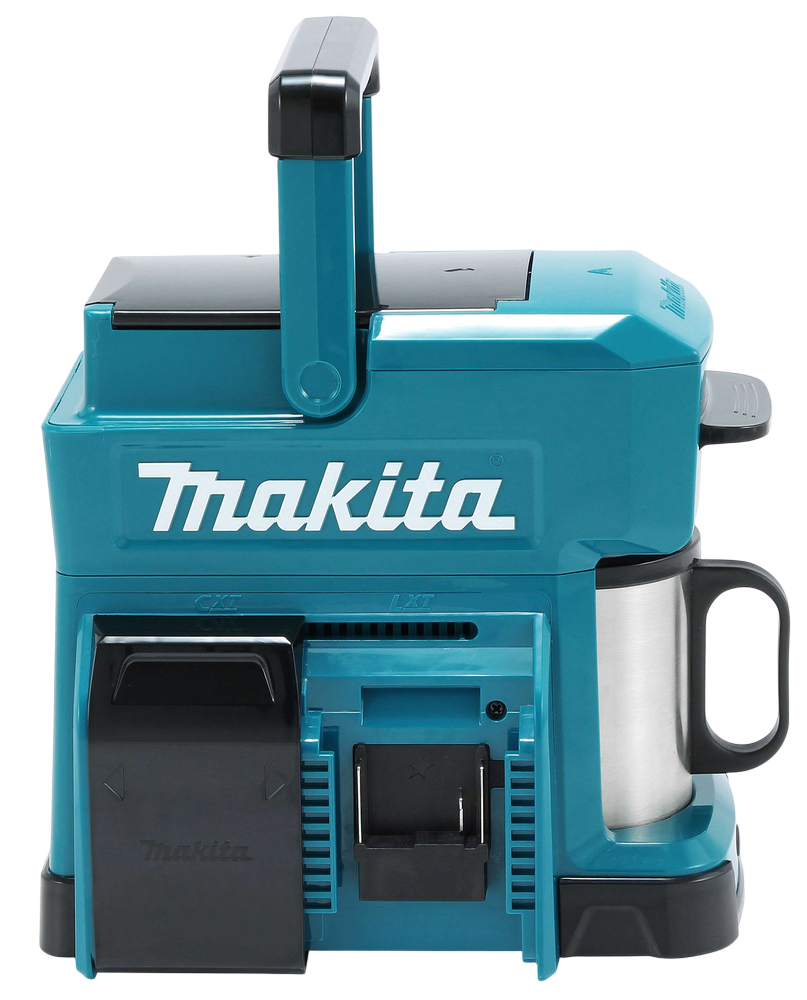
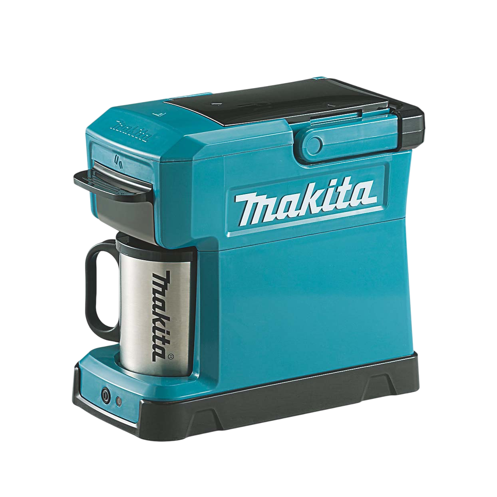
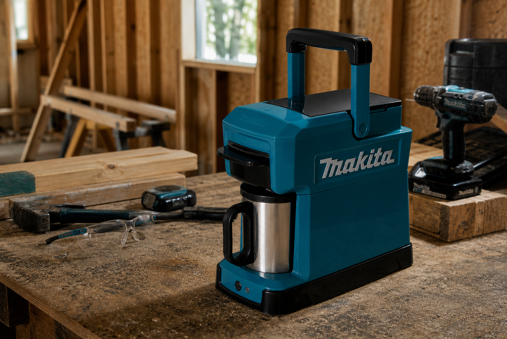
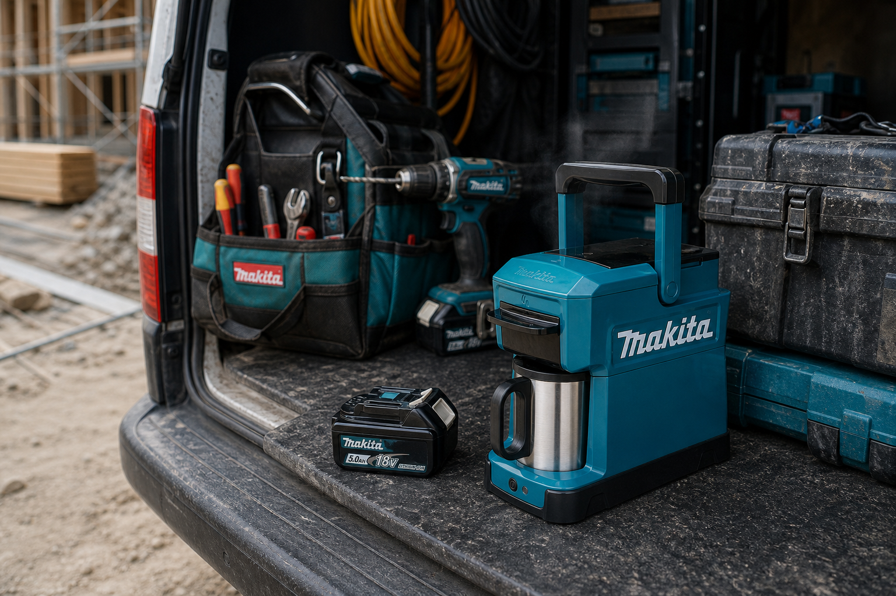
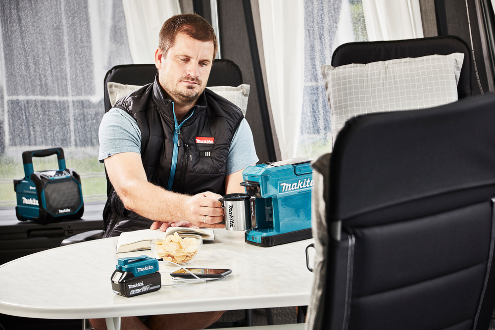

Café caliente en minutos, listo para arrancar o seguir la jornada.
EL CAFÉ QUE TRABAJA CON VOS
Cafetera inalámbrica compatible con baterías Makita LXT® 18V, pensada para preparar café caliente en jornadas exigentes.
Cuerpo compacto, fácil de trasladar y pensado para acompañar tu equipo.
Construcción robusta para soportar obra, taller y traslados diarios.
Prepara una taza práctica en el lugar, sin instalaciones ni accesorios complejos.
Modo de uso
Tan simple como utilizar una herramienta Makita
Insertá la batería.
Colocá la batería Makita LXT® 18V para alimentar la cafetera sin cables.
Agregá agua y café molido.
Cargá el depósito y prepará el café para una extracción práctica en obra o taller.
Presioná el botón de encendido.
Activá el ciclo y dejá que la DCM501 trabaje con rendimiento constante.
Disfrutá una taza caliente donde estés.
Tené café listo para seguir la jornada, sin depender de una cocina o enchufe.

Especificaciones técnicas
Batería LXT® 18V
Compatible con baterías Makita LXT® de 18V para trabajar sin enchufe y usar la misma energía del resto de tus herramientas.
"La llevo todos los días a la obra. El café sale perfecto y la batería dura muchísimo."
Martín R."Ideal para las jornadas largas. Es una herramienta más en mi camioneta."
Germán L."La uso también para camping. Práctica y resistente."
Paula M."Me resuelve las pausas en el taller sin cortar el ritmo de trabajo."
Federico S."La batería que uso en mis herramientas también me sirve para el café."
Carolina V.EL RENDIMIENTO NO SE DETIENE.
TU CAFÉ TAMPOCO.
Variedad de colores
Elegí la que mejor acompaña tu equipo

Azul Makita
El acabado clásico Makita: técnico, reconocible y alineado con el sistema LXT® de herramientas profesionales.
Café sin depender del lugar
Menos dependencia del entorno



Sistema Makita LXT®
Una herramienta más dentro del equipo
01
Usá la misma batería LXT® 18V que ya alimenta tus herramientas Makita.